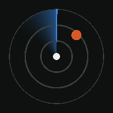

MedReg Radar医疗器械法规与政策 · 以医学影像设备为主 · 每条附原文链接
导出的是上面筛选出来的内容。复制后打开豆包、DeepSeek、Kimi 等聊天 App 粘贴发送；也可以下载文件上传给它，或交给你自己的智能体。
每个点是一份新文件，越靠近中心越和影像设备相关。点一下打开原文。
悬停或点按柱子看数值，点“表格”看全部数字
中国政府网政策文件库中，含所选关键词的文件数（按发布年份）
来自“批准注册 N 个医疗器械产品”的月度公告
收录文件按主题标签计数（一份文件可有多个标签）
按分级堆叠
安装、使用、数据来源，一页看懂
医疗器械的法规和政策更新得快，文件分散在政府网、药监局等多个网站上。MedReg Radar 把它们收拢到一处，按 影像设备 / 医疗器械 / 背景 分级，配上图表，并能一键导出给你常用的 AI。每条都附官方原文链接。
iPhone / iPad（要用 Safari 打开）
安卓手机
.apk 文件。安装包和网页版内容完全相同，数据都来自同一个地方，打开时自动更新。
本 App 不内置 AI，也不需要任何 key。你可以把筛选出的文件一键交给自己常用的 AI。
导出的内容自带说明，要求 AI 只根据资料回答、标注编号、不编造。重要结论请点原文核对。
给智能体：完整数据公开在雷达网页的 data.json，可以让你的智能体直接读取。
所有设备读取同一份数据：打开 App 时自动检查更新，有新数据会在底部提示。没有网络时显示上次的内容，顶部会标“离线缓存”。